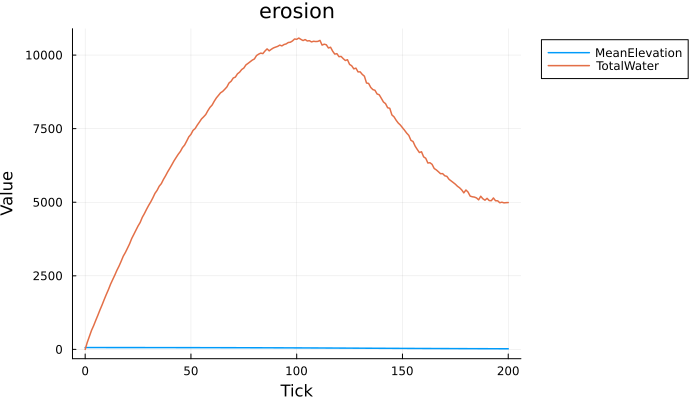
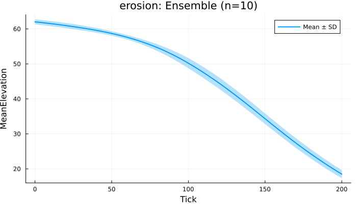
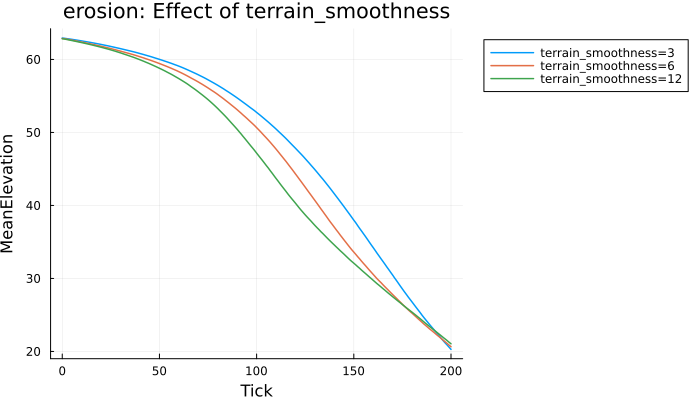

Erosion
Overview
WHAT IS IT?
This model is a simulation of soil erosion by water. The user is presented with an empty terrain. Rain falls on the terrain and starts to flow downhill. As it flows, it erodes the terrain below. The patterns of water flow change as the terrain is reshaped by erosion. Eventually, a river system emerges.
HOW IT WORKS
The soil is represented by gray patches. The lighter the patch, the higher the elevation. Water is represented by blue patches. Deeper water is represented by a darker blue. Around the edge of the world is a “drain” into which water and sediment disappear.
Each patch has a certain chance per time step of receiving rain. If it does receive rain, its water depth increases by one.
The model uses the following naive model of flowing water. Water flows to the adjacent patch where the water level is lowest, as long as that patch is lower than the source. The amount of flow is proportional to the difference in level, so that the water level on the two patches is (if possible) equalized.
Erosion is represented by decreasing the elevation of the source patch a bit when flow occurs. The amount of erosion is proportional to the amount of flow.
THINGS TO NOTICE
Initially, the world is covered by lakes. Then rivers start to form at the edge of the world. Gradually, these rivers grow until they have drained all the lakes.
THINGS TO TRY
Use the HIDE-WATER button to make the water invisible, and observe the terrain.
Experiment with the effect of the different sliders on the appearance of the resulting rivers.
See what happens when you start with a perfectly flat terrain. (Is what happens realistic, or does it reveal limitations of the model?)
See what happens when you start with a hill.
EXTENDING THE MODEL
Add evaporation. Does this alter the behavior of the system in interesting ways?
Add “springs” – point sources from which new water flows.
Add indicator turtles to show the direction and magnitude of flow on each patch.
Experiment with the rules for water flow. Currently, all of the water simply flows to the lowest neighbor. Would a more elaborate rule produce different results?
Add multiple soil types to the terrain, so that the land is of varying hardness, that is, varying speed of erosion.
What would it take to get river deltas to form? You’d need to model sediment being carried by water and then deposited.
NETLOGO FEATURES
Only patches are used, no turtles.
The code depends on agentsets always being randomly ordered.
CREDITS AND REFERENCES
Here is an eroded volcano in Kamchatka with a strong resemblance to this model: https://www.google.com/maps/@52.544312,157.338467,7882m/data=!3m1!1e3?dg=dbrw&newdg=1
Thanks to Greg Dunham and Seth Tisue for their work on this model.
HOW TO CITE
If you mention this model or the NetLogo software in a publication, we ask that you include the citations below.
For the model itself:
- Dunham, G., Tisue, S. and Wilensky, U. (2004). NetLogo Erosion model. http://ccl.northwestern.edu/netlogo/models/Erosion. Center for Connected Learning and Computer-Based Modeling, Northwestern University, Evanston, IL.
Please cite the NetLogo software as:
- Wilensky, U. (1999). NetLogo. http://ccl.northwestern.edu/netlogo/. Center for Connected Learning and Computer-Based Modeling, Northwestern University, Evanston, IL.
COPYRIGHT AND LICENSE
Copyright 2004 Uri Wilensky.

This model is licensed under the Creative Commons Attribution-NonCommercial-ShareAlike 3.0 License. To view a copy of this license, visit https://creativecommons.org/licenses/by-nc-sa/3.0/ or send a letter to Creative Commons, 559 Nathan Abbott Way, Stanford, California 94305, USA.
NetLogo itself is free software for non-commercial use under the terms of the GNU General Public License (see full license information here).
To inquire about commercial licenses for either NetLogo or specific models from the models library, please contact netlogo-commercial-admin@ccl.northwestern.edu.
This model was created as part of the projects: PARTICIPATORY SIMULATIONS: NETWORK-BASED DESIGN FOR SYSTEMS LEARNING IN CLASSROOMS and/or INTEGRATED SIMULATION AND MODELING ENVIRONMENT. The project gratefully acknowledges the support of the National Science Foundation (REPP & ROLE programs) – grant numbers REC #9814682 and REC-0126227.
Parameters
| Parameter | Type | Default | Description |
|---|---|---|---|
grid_width | Int | 51 | -25..25 =\> 51 patches (NetLogo -50..50 = 101, reduced for speed) |
grid_height | Int | 51 | grid height |
bumpy | Bool | true | bumpy |
hill | Bool | false | hill |
terrain_smoothness | Int | 6 | terrain smoothness |
rainfall | Float64 | 0.1 | rainfall |
soil_hardness | Float64 | 0.8 | soil hardness |
max_ticks | Int | 200 | max ticks |
Source Code
The Julia code to run this model:
using ArkModelZoo
_, trajectory = run_erosion()Time Series

Ensemble Runs
Ten replicates with different random seeds, showing mean ± standard deviation.

Parameter Sensitivity
Varying terrain_smoothness.

Appendix: Source Code
This model is implemented in the Ark.jl Entity-Component-System (ECS) framework. The code is split into five files, each with a distinct role:
- Parameters: a mutable struct holding all configurable values.
- Components: lightweight data types attached to individual entities (agents).
- Resources: world-level shared state accessible to all systems.
- Systems: functions that operate on entities each tick, defining model behavior.
- Model: wiring that assembles the world, registers resources and systems, and provides the run entry point.
Parameters (parameters.jl)
The parameter struct uses @kwdef so that every field has a default value and can be overridden by keyword. These defaults match the original NetLogo model’s slider settings.
Base.@kwdef mutable struct ERParams
grid_width::Int = 51 # -25..25 => 51 patches (NetLogo -50..50 = 101, reduced for speed)
grid_height::Int = 51
bumpy::Bool = true
hill::Bool = false
terrain_smoothness::Int = 6
rainfall::Float64 = 0.1
soil_hardness::Float64 = 0.8
max_ticks::Int = 200
seed::Int = 42
endComponents (components.jl)
Components are lightweight data types attached to individual entities (agents). Mutable structs hold per-entity state, while empty tag structs act as markers for the ECS query system to efficiently filter entities.
# Erosion is a patch-only model — no turtle components needed.
# We use a dummy component so the World has at least one component type.
mutable struct ERDummy
val::Int
end
ERDummy() = ERDummy(0)Resources (resources.jl)
Resources are world-level singletons shared across all systems, used for global state and aggregate statistics.
mutable struct ERGrid
width::Int
height::Int
elevation::Matrix{Float64}
water::Matrix{Float64}
drain::Matrix{Bool}
end
function ERGrid(w::Int, h::Int)
ERGrid(w, h, zeros(w, h), zeros(w, h), falses(w, h))
end
mutable struct ERStats
mean_elevation::Float64
total_water::Float64
end
ERStats() = ERStats(0.0, 0.0)Systems (systems.jl)
Systems contain the model logic and execute in a defined order each tick. Each system struct implements either initialize! (run once at setup) or update! (run every tick).
struct InitErosionSystem <: System end
function initialize!(::InitErosionSystem, world::World)
params = get_resource(world, ERParams)
rng = get_resource(world, RNGResource).rng
g = get_resource(world, ERGrid)
w, h = g.width, g.height
cx, cy = (w + 1) / 2.0, (h + 1) / 2.0
max_dist = max(cx - 1, cy - 1)
for x in 1:w, y in 1:h
if params.bumpy
dist = sqrt((x - cx)^2 + (y - cy)^2)
if params.hill
g.elevation[x, y] = -100.0 * (dist / max_dist) + 100.0 + Float64(rand(rng, 0:99))
else
g.elevation[x, y] = Float64(rand(rng, 0:124))
end
else
g.elevation[x, y] = 100.0
end
g.water[x, y] = 0.0
g.drain[x, y] = false
end
# Smooth terrain via diffusion (NetLogo: diffuse elevation 0.5)
# NetLogo diffuse: each patch shares rate/8 of its value with each of its
# existing neighbors; shares to non-existent neighbors are kept by the patch.
if params.bumpy
old = similar(g.elevation)
rate8 = 0.5 / 8.0
for _ in 1:params.terrain_smoothness
copyto!(old, g.elevation)
for x in 1:w, y in 1:h
s = 0.0; n_nbrs = 0
for dx in -1:1, dy in -1:1
(dx == 0 && dy == 0) && continue
nx, ny = x + dx, y + dy
if 1 <= nx <= w && 1 <= ny <= h
s += old[nx, ny]; n_nbrs += 1
end
end
g.elevation[x, y] = old[x, y] * (1.0 - n_nbrs * rate8) + s * rate8
end
end
end
# Mark edge patches as drains
for x in 1:w, y in 1:h
is_edge = (x == 1 || x == w || y == 1 || y == h)
if is_edge
g.drain[x, y] = true
g.elevation[x, y] = -1e7
end
end
_er_update_stats!(world)
return nothing
end
struct ErosionGoSystem <: System end
function update!(::ErosionGoSystem, world::World)
params = get_resource(world, ERParams)
rng = get_resource(world, RNGResource).rng
g = get_resource(world, ERGrid)
w, h = g.width, g.height
# Rainfall on land patches
for x in 1:w, y in 1:h
g.drain[x, y] && continue
if rand(rng) < params.rainfall
g.water[x, y] += 1.0
end
end
# Flow — shuffle land patch order (NetLogo ask agentset is random order)
land_patches = [(x, y) for x in 1:w for y in 1:h if !g.drain[x, y]]
Random.shuffle!(rng, land_patches)
for (x, y) in land_patches
g.water[x, y] <= 0.0 && continue
# Find neighbor with lowest (elevation + water)
best_x, best_y = x, y
best_level = g.elevation[x, y] + g.water[x, y]
for dx in -1:1, dy in -1:1
(dx == 0 && dy == 0) && continue
nx, ny = x + dx, y + dy
(nx < 1 || nx > w || ny < 1 || ny > h) && continue
level = g.elevation[nx, ny] + g.water[nx, ny]
if level < best_level
best_level = level
best_x = nx
best_y = ny
end
end
(best_x == x && best_y == y) && continue
my_level = g.elevation[x, y] + g.water[x, y]
target_level = g.elevation[best_x, best_y] + g.water[best_x, best_y]
amount = min(g.water[x, y], 0.5 * (my_level - target_level))
amount <= 0.0 && continue
# Erosion
erosion = amount * (1.0 - params.soil_hardness)
g.elevation[x, y] -= erosion
# Recalculate amount after erosion changed elevation
my_level = g.elevation[x, y] + g.water[x, y]
target_level = g.elevation[best_x, best_y] + g.water[best_x, best_y]
amount = min(g.water[x, y], 0.5 * (my_level - target_level))
if amount > 0.0
g.water[x, y] -= amount
g.water[best_x, best_y] += amount
end
end
# Reset drains
for x in 1:w, y in 1:h
if g.drain[x, y]
g.water[x, y] = 0.0
g.elevation[x, y] = -1e7
end
end
_er_update_stats!(world)
return nothing
end
function _er_update_stats!(world::World)
g = get_resource(world, ERGrid)
stats = get_resource(world, ERStats)
w, h = g.width, g.height
sum_elev = 0.0; sum_water = 0.0; n_land = 0
for x in 1:w, y in 1:h
g.drain[x, y] && continue
sum_elev += g.elevation[x, y]
sum_water += g.water[x, y]
n_land += 1
end
stats.mean_elevation = n_land > 0 ? sum_elev / n_land : 0.0
stats.total_water = sum_water
end
struct ErosionTerminationSystem <: System end
function update!(::ErosionTerminationSystem, world::World)
params = get_resource(world, ERParams)
tick = get_resource(world, Tick)
if tick.tick + 1 >= params.max_ticks
get_resource(world, Terminate).stop = true
end
return nothing
endModel (model.jl)
The model file assembles all pieces: it creates the ECS World with the required component types, registers resources, builds the Scheduler with systems in execution order, and exposes the public run entry point. The observer pattern records the trajectory each tick.
function erosion_world(; initial_capacity::Int = 64)
return World(ERDummy; initial_capacity = initial_capacity, allow_mutable = true)
end
function erosion_systems()
return (InitErosionSystem(), ErosionGoSystem(), ErosionTerminationSystem())
end
function erosion_model(params::ERParams = ERParams())
world = erosion_world()
_add_standard_resources!(world, params)
add_resource!(world, ERGrid(params.grid_width, params.grid_height))
add_resource!(world, ERStats())
scheduler = Scheduler(world, erosion_systems())
initialize!(scheduler)
return scheduler
end
struct ErosionObserver end
function erosion_headers(::ErosionObserver)
return ["MeanElevation", "TotalWater"]
end
function erosion_values(::ErosionObserver, world::World)
stats = get_resource(world, ERStats)
return Float64[stats.mean_elevation, stats.total_water]
end
function run_erosion(; params::ERParams = ERParams(), observe::Bool = true)
return _run_model(erosion_model, ErosionObserver(), erosion_values; params, observe)
end